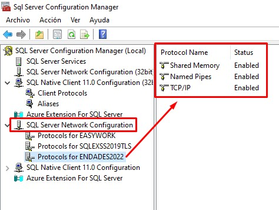
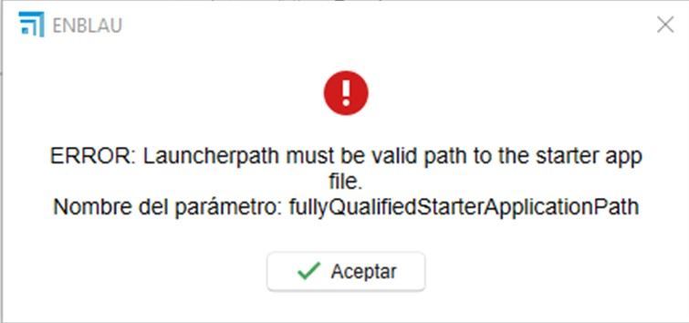
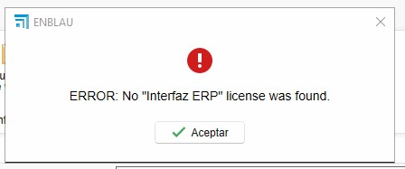

Possible Errors
1. Errors and Solutions
1.1. Server and Database Connection Error
Error Description:
When trying to select the database in ENBLAU, an error message appears if the server or instance cannot be found.
This issue may be caused by blocks from the antivirus or firewall on the server where ENBLAU is running.

Solution:
Review the antivirus or firewall rules and exceptions on the server. Example:
- From Firewall → Advanced Settings → Inbound Rules, verify that ports 1433 TCP (standard SQL Server port) and 1434 UDP (for instance discovery) are enabled:

- From SQL Server Configuration Manager, verify that the ENDADES2022 instance has TCP/IP enabled:

ℹ️ Note: For more details, see section 2. Antivirus and Firewall Settings in the System Configuration guide.
Once checked, open enCONNECT and select the server and database.
1.2. Factory Connection Error
Error Description:
When trying to connect to the factory, an error appears indicating that the execution path to connect with Logikal is not defined correctly.

Solution:
Verify that the Logikal application path is correct.
- In ENBLAU, go to:
General → Logikal - Connection and Projects.


1.3. ERP Interface Error
Error Description:
When trying to connect to the factory, an error appears indicating that no valid license was found for the Logikal ERP interface.

Solution:
To establish a connection with the factory, the Logikal ERP module must be installed.
Contact Orgadata to manage the license:
- Email: customer.support@orgadata.com
- Call the Logikal support technician.
1.4. Logikal factory access error
Error description:
When attempting to connect to the factory (Logikal), an access error is displayed on the folder path where Logikal is being executed.

Solution:
To establish the connection with the factory, the folder must be set as trusted. To do this, in Windows go to Network and Internet > Internet Options:

Then, in Internet Properties, go to the Security > Local intranet > Sites > Advanced tab and add these 2 websites file://server and server.

1.5. Server connection error from enSITE
Error Description:
When trying to connect to the server from the enSITE (tablet) application, an error message appears related to the SQL Server connection.


Solution:
-
Check the network:
Make sure the tablet is connected to the same local network as the server hosting the database. -
Check the firewall and antivirus:
Ensure the firewall and/or antivirus are not blocking the connection between the device and SQL Server.
Add rules or exceptions if necessary. -
Check port configuration:
On the server, make sure the SQL Server ports are enabled, including:-
1433/TCP (standard SQL Server port). Verify and configure in SQL Server Configuration Manager:
- Go to SQL Server Network Configuration → Protocols for ENDADES2022.
- In TCP/IP Properties → IP Addresses, ensure that all IPs have the TCP Port set to 1433 and the TCP Dynamic Port set to 0.

-
1434 UDP (for instance discovery)
-
ℹ️Note: This error is common when there are network or security configuration conflicts. Checking all the points above usually resolves the issue.
1.6. File error
- Error description:
This error occurs when Windows occasionally corrupts certain files. It may be related to the operating system configuration.

Solution:
-
Delete the folder:
By deleting the folder indicated in the path shown by the error, the issue is resolved.- Close ENBLAU.
- Delete the folder
C:\Users\User_name\AppData\Local\Endades - Open ENBLAU.
1.7. License Registration Error
Error description:
On some occasions, when opening ENBLAU, the system may request the license registration again.

The possible causes are as follows:
- ENBLAU is installed on a server and the workstation from which it is executed accesses it through a network drive. The connection may have failed due to changes or updates on the server.
- The workstation from which ENBLAU is executed is not visible on the network.
- There are permission issues on the network drive.
- Issue with the server IP address and name with network configuration.
Solution:
-
Verify that the network is working correctly and that there are no connectivity issues.
-
Solution for ENBLAU license control. Correctly configure the server name and its IP address in the Windows hosts file. This solution applies when there is an incorrect network configuration.
-
From the server, open enUPDATE and synchronize the License and updates option. Then, open ENBLAU directly from the server to check that it runs correctly.

- Check that the application license is up to date in terms of payments. The license expires automatically; in that case, contact technical support at comercial@endades.com.
⚠️ Important: It is mandatory to use at least SQL Server 2022 to ensure compatibility with ENBLAU and enSITE versions.
 Español
Español
 English
English
 Italiano
Italiano
 Português
Português